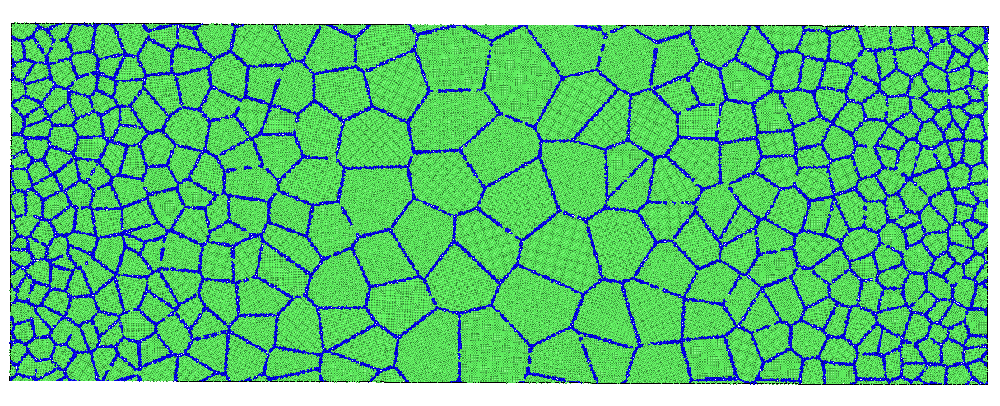
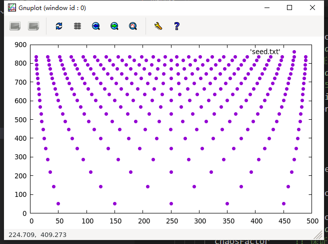
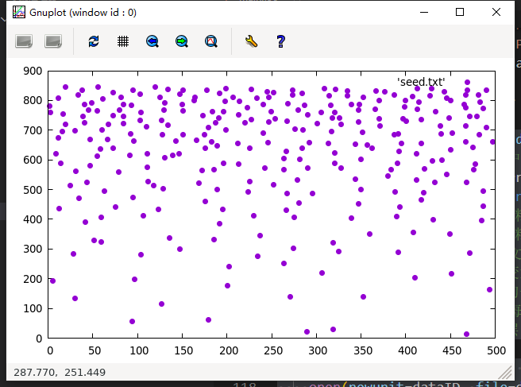
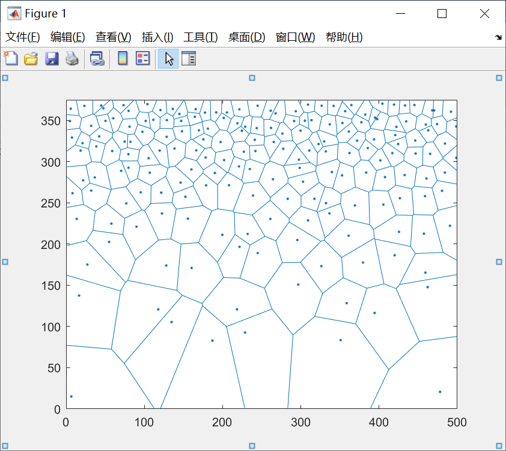
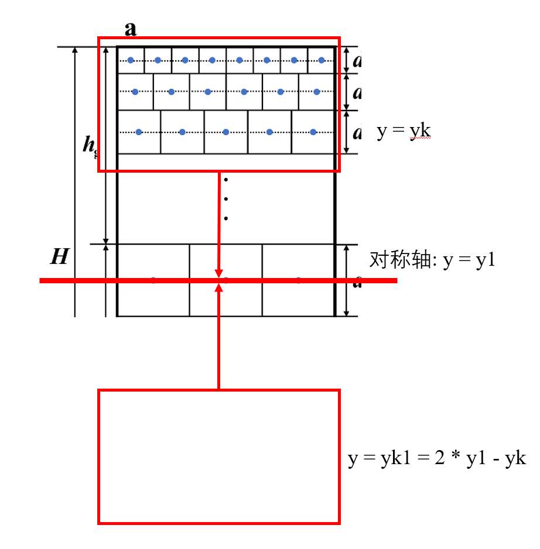
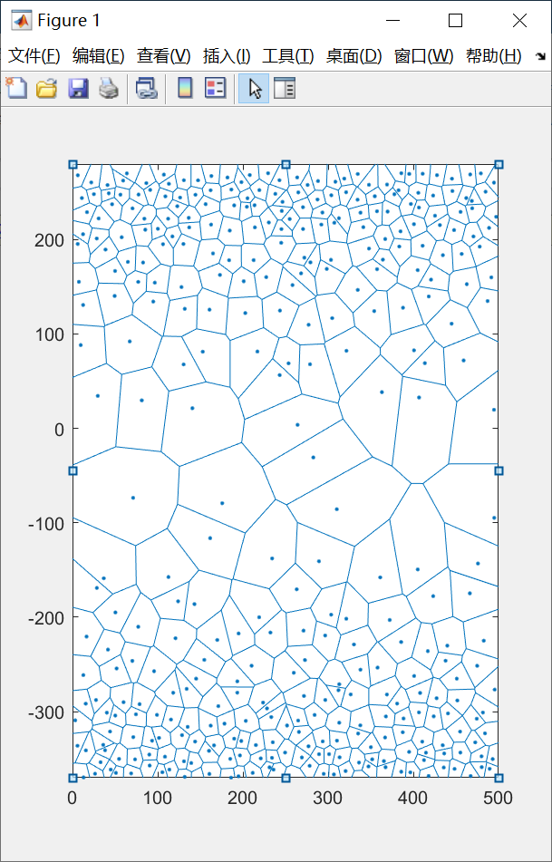
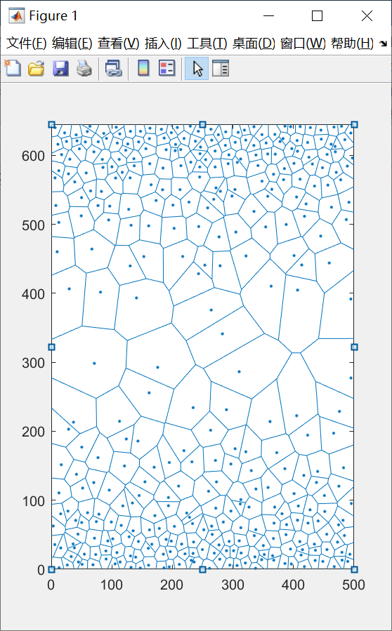
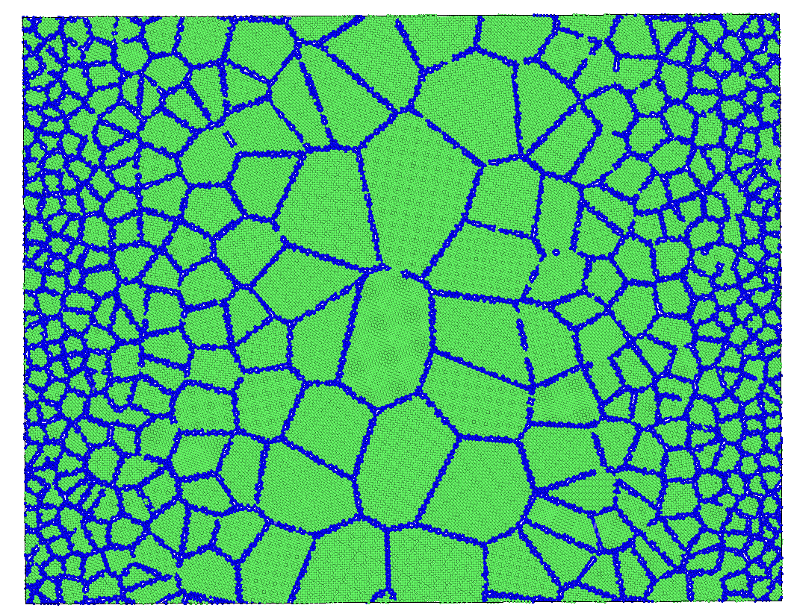

梯度多晶的建模(以二维为例)
大家好, 今天为大家带来二维梯度多晶的建模教程, 废话不多说, 首先上结果图:

数学推导和编程思路
基本思想
首先呢, 上示意图, 来更好的解释一下梯度多晶的建模思路, 这张图是我从我师兄的SCI里面扣出来的, 相当于多了一次引用:

我师兄是做有限元的, 和分子动力学略有不同, 所以在a图中, hc部分的晶粒分布可以不看, 现在我们来看a图, 我们假设已经知道了整个模型在横向的尺寸为L, 我们再做一个假设, 在a图中, 每个晶粒均为正方形, 那么如何实现梯度分布呢? 从a图中, 最直观的想法就是, 如果我第一层晶粒为8个, 第二层晶粒为6个, 第三层为4个, 以此类推, 构成一个等差数组, 而考虑到整个模型的横向尺寸L是一个已知的定值, 那么第一层晶粒的尺寸d1 = L/8, d2 = L/6, d3 = L/4......
那么我们会惊喜的发现, 每一层晶粒的尺寸在随着纵向坐标的增加而减少, 也就是实现了梯度的晶粒分布, 同时, 如果第一层到第二层的晶粒不是减少而是增加呢?那也是一样的算法, 也可以实现逆梯度分布.而这也是我今天想要讲述的最基础的梯度分布.
当然还没完, 之后我们还需要给每个晶粒的控制点加入一个扰动, 这个扰动的大小应该在(-0.5, 0.5) * dk之间, dk是第k层晶粒的尺寸. 加入之后的效果如图b所示, 这样, 我们才能生成一个比较好的随机梯度分布的多晶模型, 多晶模型如图c所示. 当然, 在分子动力学中, 我建议最好保持图c中surface和core的周期性边界条件, 因为如果像图c的种子去生成多晶, 那么模型就会非常难看. 好的, 那么基本的建模思路接受了, 接下来就是编程的环节了.
编程思路
事先声明, 本教程不针对0编程基础和零Fortran基础人员, 如果没有相关基础, 建议谨慎观看, 当然实际上下面的内容不会很难, 普通的使用Fortran的写法, 和MATLAB不会差太多, 除了没有MATLAB众多的内置函数以外.
这里对我的程序做一些简单的说明, 一些没有讲到的细节, 可以发邮件询问我, 当然我个人的建议是百度, 通常2分钟可以解决你的大多数问题. 首先让我们看看, 对于计算各个控制节点的位置, 需要哪些参数? 首先应该由用户设置模型的横向尺寸L, 接着, 第一层的晶粒数first也应该给出, 同时每一层应该增加或者减少的晶粒数delta也应该给出, 且delta>0代表每一层的晶粒增加, delta<0代表每一层的晶粒减少.同时我们将使用2个数组, 一个用来存储每一层晶粒的尺寸, 一个用来存储所有晶粒的坐标和对应层数. 同时, 在给每个晶粒施加扰动的时候, 我们想控制扰动的程度, 可以使用一个在(0, 1)的实数chaosFactor进行控制. 还有一些其他的参数, 这里我们列举出来:
use iso_fortran_env, only: stdout => output_unit, wp => real64 implicit none real(wp), allocatable :: dK(:) !< 某一层晶粒的尺寸 real(wp), allocatable :: coordinate(:, :) !< 含有所有控制点坐标的数组 real(wp) :: L !< 二维模型的宽度 real(wp) :: xlim, ylim !< 两个方向上的的坐标极限 real(wp) :: chaosFactor !< 一个在(0, 1)之间的实数, 决定了控制点偏离平衡位置的程度 integer :: index = 1 !< 指向某一个晶粒的坐标 integer :: K !< 梯度晶粒的层数 integer :: first !< 第一层晶粒数 integer :: delta !< 每一层减少的晶粒数 integer :: gNum !< 每一层的晶粒数 integer :: layers !< 一共多少个晶粒 integer :: i, j !< 循环变量 logical :: isAtomsk !< 判断是否写出atomsk的文件 logical :: isPeriod !< 是否考虑让晶粒对称周期性分布首先我们考虑如何从用户手中读取到想要的参数, 这里我采用的Fortran中的namelist读取方法, 因为这种方法简单易行, 而且对于使用者也比较友好:
xsubroutine ReadParameter(nmlName, length, gNumber, del, layer, isAtom, period, cFactor) character(len=*), intent(in) :: nmlName !< 含有nml格式的文件的名称 real(wp), intent(out) :: length !< 多晶模型中的长度 real(wp), intent(out) :: cFactor !< 一个在(0, 1)之间的实数, 决定了控制点偏离平衡位置的程度 integer, intent(out) :: gNumber !< 第一层晶粒的数量 integer, intent(out) :: del !< 每一层减少的晶粒数量 integer, intent(out) :: layer !< 一共有多少层 logical, intent(out) :: isAtom !< 是否写出atomsk格式的控制节点文件 logical, intent(out) :: period !< 是否考虑让晶粒对称周期性分布 integer :: nmlID !< 文件ID通道 integer :: ioflag !< 看看文件读取是否成功 namelist/myList/ length, gNumber, del, layer, isAtom, period, cFactor
open(newunit=nmlID, file=nmlName, action='read') !! 打开文件 read(unit=nmlID, nml=myList, iostat=ioflag) !! 按namelist方式读取 close(nmlID) !! 关闭文件 !! 读取之后应该对参数进行一些基本的判断 if (del == 0 ) then write(stdout , '(A)') 'You must make variable del not equal to zero.' stop else if (del < 0 ) then if ((gNumber + (layer - 1) * del) < 0) then write(stdout , '(A)') 'Negative number of grain, please check your parameter.' stop end if end if if (gNumber < 0.d0) stop 'Please give parameter gNumer a positive number.' if (length < 0.0d0) stop 'Please give parameter length a positive number.' if (cFactor < 0.d0 .or. cFactor > 1.d0) stop 'chaosFactor must between 0 and 1, please check your input.'
end subroutine ReadParameter在Fortran中, 我们只需要把想要读取到的变量用namelist进行定义, 然后在打开了文件之后, 使用read()函数, 指明nml关键字的取值进行读取即可, 这是它的输入文件的样子, 输入文件中的变量名称和namelist名称必须和程序中的一一对应, 必须严格按照下图中的格式编写:
xxxxxxxxxx&myListlength = 600.d0gNumber = 5del = 1layer = 15isAtom = .true.Period = .true.cFactor = 0.9d0/
读取到了参数之后, 开始做一些前期的准备工作:
xxxxxxxxxx layers = K * first + (K * (K - 1)) / 2 * delta !! 利用等差数列计算需要分配多少内存 !! layers代表本次需要计算多少个晶粒的位置 !! 分配内存 allocate(dk(K)) allocate(coordinate(layers, 3)) !! 有3列数据, 分别是控制节点的xy坐标, 和属于第几层的晶粒
!! 初始化所有晶粒尺寸为0 dk = 0.d0 call random_seed !! 初始化随机数种子计算完了基本参数之后, 我们回过头来看看图a, 为了方便起见, 我们从底下往上面, 逐层生成晶粒的xy坐标, 这一过程将由一个双层循环完成, 第一层循环是循环第i层, 第二层循环是计算第i层的第j个晶粒:
xxxxxxxxxx do i = 1, K gNum = first + (i - 1 ) * delta !! 第 i 层的晶粒个数 do j = 1, gNum dK(i) = L / (gNum) !! 计算第 i 层晶粒的尺寸 if ( i == 1) then coordinate(index, 1) = (0.5 * dK(i)) + (j - 1) * dK(i) !! 计算晶粒节点的x坐标 coordinate(index, 2) = dK(i) * 0.5d0 !! 计算晶粒节点的y坐标 coordinate(index, 3) = real(i, kind=wp) !! 声明是第几层的晶粒, 方便后续调用 index = index + 1 else coordinate(index, 1) = (0.5 * dK(i)) + (j - 1) * dK(i) coordinate(index, 2) = (sum(dK(1 : i - 1)) + dk(i) * 0.5d0) coordinate(index, 3) = real(i, kind=wp) index = index + 1 end if end do end do !! 循环结束, 此时的index - 1 也正好等于晶粒个数上述的代码我个人认为逻辑已经非常清晰了, 同学们可以试着根据图a和上述代码推演一下循环的思路过程, 这里为了不让同学们再耗费时间往上翻, 这里重新声明一下上图双重循环代码中几个变量的含义:
i, j: 循环变量
gNum: 第i层晶粒的晶粒尺寸
coordinate(:, :): 一个二维数组, 行数等于晶粒数, 有3列, 前2列分别对应晶粒的xy坐标, 而第三列对应晶粒属于哪一层
dk(:): 一个一维数组, 记录了每一层晶粒的尺寸, 如dk(2)就是第二层晶粒的尺寸
循环结束之后, 计算模型的相关信息:
xxxxxxxxxx xlim = L if (isPeriod) then !! 计算x和y区域的上下限 ylim = 2.d0 * sum(dK) - dk(1) else ylim = sum(dK) end if并将相关信息输出到屏幕上面:
xxxxxxxxxx !! 生成完之后将相关信息输出到屏幕上面 if (isPeriod) then write(stdout, '(A,I0,A)') '控制点生成结束, 一共生成了', 2*(index - 1)-first,'个控制节点.' else write(stdout, '(A,I0,A)') '控制点生成结束, 一共生成了', index - 1,'个控制节点.' end if
write(stdout, '(A,I0,A)') '其中第一层的控制节点个数为: ', first, '个.' write(stdout, '(A,I0,A)') '每层变化的控制节点个数为: ', delta, '个.'
if (isPeriod) then write(stdout, '(A,I0,A)') '总计生成', 2*K-1, '层梯度层.' else write(stdout, '(A,I0,A)') '总计生成', K, '层梯度层.' end if write(stdout, '(A, G0, A, G0)') 'x方向上长度: ', xlim, ', y方向上长度: ', ylimisPeriod是一个逻辑变量, 取决于用户的输入, 可以决定是否生成周期性的梯度晶粒分布, 这里我们暂且按下不表, 来测试一下相关代码的结果, MATLAB中提供了一个voronoi函数, 可以根据控制节点直接绘制taylor多边形. 首先测试输入如下:
xxxxxxxxxx&myListlength = 500.d0gNumber = 5del = 3layer = 10isAtom = .false.Period = .false.cFactor = 0.9d0/
屏幕上面的输出结果是:
xxxxxxxxxx控制点生成结束, 一共生成了290个控制节点.其中第一层的控制节点个数为: 5个.每层变化的控制节点个数为: 1个.总计生成20层梯度层.x方向上长度: 500.00000000000000, y方向上长度: 846.31242221008688
使用gnuplot绘图结果:

看起来还不错, 但是有同学可能就发现了, 为什么分布的这么均匀? 没有随机性呀? 是的, 因为我们的代码还没有把随机数相关的内容写进去, 这里是展示一下中间结果, 接下来我们将引入扰动值, 以便于生成梯度多晶, 通过子程序WriteData实现:
x
subroutine WriteData(array, dataname) !! 将计算出来的结果写入文件中方便MATLAB用来绘图 real(wp), intent(in) :: array(:, :) !< 包含所有控制节点坐标的数组 character(len=*), intent(in) :: dataname !< 写出去的数据文件的名称 real(wp) :: chaosx !< 晶粒的扰动, 在x方向上 real(wp) :: chaosy !< 晶粒的扰动, 在y方向上 integer :: dataID !< data文件的通道ID integer :: x, y !< 循环变量 integer :: ndim !< 晶粒的个数 integer :: grainNum !< 每一层的晶粒个数 integer :: floor !< 第几层
ndim = size(array, dim=1) !! 获取第一个维度的尺寸 open(newunit=dataID, file=dataname, action='write') if (isPeriod) then !! 如果要求周期性的晶粒分布 do x = 1, ndim floor = nint(coordinate(x, 3)) !! 查询第x个晶粒是第几层 call random_number(chaosx) !! 生成一个(0, 1)之间的随机数 call random_number(chaosy) chaosx = (chaosx - 0.5d0) * dK(floor) * chaosFactor !! 保证扰动在正负的晶粒尺寸一半以内 chaosy = (chaosy - 0.5d0) * dK(floor) * chaosFactor !! chaosFactor是扰动因子, 越小说明晶粒扰动越小 write(dataID, *) array(x, 1) + chaosx, array(x, 2) + chaosy + sum(dK(2:K)) end do do x = first + 1, index - 1 !! 将相关的晶粒输出一遍 floor = nint(coordinate(x, 3)) call random_number(chaosx) !! 生成一个(0, 1)之间的随机数 call random_number(chaosy) chaosx = (chaosx - 0.5d0) * dK(floor) * chaosFactor !! 保证扰动在正负的晶粒尺寸一半以内 chaosy = (chaosy - 0.5d0) * dK(floor) * chaosFactor !! chaosFactor是扰动因子, 越小说明晶粒扰动越小 write(dataID, *) coordinate(x, 1) + chaosx, 2.d0 * coordinate(1, 2) - coordinate(x, 2) + chaosy + sum(dK(2:K)) end do else do x = 1, ndim floor = nint(coordinate(x, 3)) !! 查询第x个晶粒是第几层 call random_number(chaosx) !! 生成一个(0, 1)之间的随机数 call random_number(chaosy) chaosx = (chaosx - 0.5d0) * dK(floor) * chaosFactor chaosy = (chaosy - 0.5d0) * dK(floor) * chaosFactor write(dataID, *) array(x, 1) + chaosx, array(x, 2) + chaosy end do end if close(dataID)
end subroutine WriteData上述代码有些冗长, 我们先来看看随机扰动部分, 首先来看到else里面的do循环, 这个循环中, ndim为晶粒的数量, random_numer为Fortran的内置一个伪随机数生成器, 可以生成一个(0, 1)之间的均匀分布的随机数, 这里我们在生成完之后马上减去0.5, 以使得其范围落在(-0.5, 0.5)之间, 同时再乘以对应层数的晶粒尺寸, 再乘以一个扰动系数chaosFactor, 这样我们就可以控制晶粒节点的扰动不会超过晶粒尺寸的正负一半. 加上了随机扰动之后, 我们来看看控制节点的分布:

目前似乎看不出什么, 别着急, 这里我们把节点坐标的文件导入MATLAB, 使用voronoi函数进行调用, 假设含有控制节点位置的文件名为seed.txt, 首先使用seeds = importdata('seed.txt')进行导入, 接着使用voronoi(seeds(:,1),seeds(:,2))进行绘图, 绘图结果如下:

可以看到, 还算是勉强取得了令人满意的效果. 但是不要忘记了, 我们最终是要生成控制节点坐标, 输入到atomsk里面, 生成二维的梯度多晶的模型, 而atomsk在生成梯度多晶的时候有一个问题, 默认xyz方向都是周期性边界条件, 如果采用上图的种子文件去生成多晶模型, 那么底部的大晶粒和顶部的小晶粒的连接部分就会非常尖锐, 甚至生成失败. 所以为了生成可用的多晶种子文件, 我们还需要进行一次修改.如下是我们的修改思路:

首先, 我们假设第一层晶粒的y坐标为y1, 而第k层的晶粒y坐标为yk, 现在, 我们为了保证周期性, 我们需要把所有在y = y1以上的晶粒沿着y = y1这个对称轴对称过去, 根据简单的几何学知识, 假设yk对称过去的坐标是yk1, 而yk1 = 2 * y1 - yk. 而x坐标呢? x坐标是不变的, 那么只需要一个小小的循环, 我们就可以轻松的把对称的晶粒坐标求出并写入到文件中:
xxxxxxxxxx do x = first + 1, index - 1 !! 将相关的晶粒输出一遍 floor = nint(coordinate(x, 3)) call random_number(chaosx) !! 生成一个(0, 1)之间的随机数 call random_number(chaosy) chaosx = (chaosx - 0.5d0) * dK(floor) * chaosFactor !! 保证扰动在正负的晶粒尺寸一半以内 chaosy = (chaosy - 0.5d0) * dK(floor) * chaosFactor !! chaosFactor是扰动因子, 越小说明晶粒扰动越小 write(dataID, *) coordinate(x, 1) + chaosx, 2.d0 * coordinate(1, 2) - coordinate(x, 2) + chaosy + sum(dK(2:K)) end do上述代码在WriteData这个子程序中出现过一次, 而再次出现在这里, 想必同学们更能理解其含义了, 第一层共有first个晶粒, 而第一层的晶粒无需对称过去, 所以从第first + 1 个晶粒开始循环, 而index - 1则是总晶粒数. 之后便是常规的添加扰动, 写入文件了. 现在我们把上面用的的含有输入参数的文件中的period改为true之后, 来看看修改之后的结果:

好, 看起来非常不错了, 现在我们把它导入到atomsk里面生成多晶模型, 这个时候你发现不对劲了, atomsk需要提前定义盒子的xyz的长度, 且默认xyz均大于0, 但是现在我们的多晶模型居然有相当一部分的晶粒控制节点的y坐标是小于0的. 那么怎么办呢? 通过仔细观察上图和上上图, 我们发现, 比起单向梯度多晶模型, 周期性梯度多晶模型中多了layer - 1层的晶粒, 其中layer为单向梯度多晶模型的层数, 而这对称过去的layer - 1层的晶粒, 会导致整个模型的长度比起单向梯度多晶模型多了sum(dk(2 : layer - 1))的长度, 那么, 我们是不是只需要把模型向上平移这么多长度? 即每个晶粒的y坐标都加上这么个东西, 问题是不是就解决了呢? 我们来尝试一下:
xlim = L if (isPeriod) then !! 计算x和y区域的上下限 ylim = 2.d0 * sum(dK) - dk(1) else ylim = sum(dK) end if加入上述语句之后, 重新生成模型

好, 非常完美, 那么现在这个东西, 是不是就可以用于生成atomsk的晶粒种子文件了? 答案是还差一点点, 因为atomsk的种子文件和我们现在导出的文本文件还是差了一些格式, 现在我们重新编写一个用于导出atomsk可以识别的种子文件的子程序:
subroutine WriteAtomsk(array, modelname, xdim, ydim) !! 以atomsk可以读取的格式写入文本文件之中 real(wp), intent(in) :: array(:, :) !< 包含所有控制节点坐标的数组 real(wp), intent(in) :: xdim, ydim !< 仿真盒子在xy方向上的长度 character(len=*), intent(in) :: modelname !< 写出去的数据文件的名称 real(wp) :: chaosx !< 晶粒的扰动, 在x方向上 real(wp) :: chaosy !< 晶粒的扰动, 在y方向上 integer :: modelID integer :: x integer :: ndim integer :: floor !< 第几层
ndim = size(array, dim=1) !! 获取第一个维度的尺寸 open(newunit=modelID, file=modelname, action='write') write(modelID, *) 'box', xdim, ydim, 0.d0 if (isPeriod) then !! 如果要求周期性的晶粒分布 do x = 1, ndim floor = nint(coordinate(x, 3)) !! 查询第x个晶粒是第几层 call random_number(chaosx) !! 生成一个(0, 1)之间的随机数 call random_number(chaosy) chaosx = (chaosx - 0.5d0) * dK(floor) * chaosFactor !! 保证扰动在正负的晶粒尺寸一半以内 chaosy = (chaosy - 0.5d0) * dK(floor) * chaosFactor !! 0.95是扰动因子, 越小说明晶粒扰动越小 write(modelID, *) 'node', array(x, 1) + chaosx, array(x, 2) + chaosy + sum(dK(2:K)), 0.d0, 'random' end do do x = first + 1, index - 1 !! 将相关的晶粒输出一遍 floor = nint(coordinate(x, 3)) !! 查询第x个晶粒是第几层 call random_number(chaosx) !! 生成一个(0, 1)之间的随机数 call random_number(chaosy) chaosx = (chaosx - 0.5d0) * dK(floor) * chaosFactor !! 保证扰动在正负的晶粒尺寸一半以内 chaosy = (chaosy - 0.5d0) * dK(floor) * chaosFactor !! 0.95是扰动因子, 越小说明晶粒扰动越小 write(modelID, *) 'node', coordinate(x, 1) + chaosx, 2.d0 * coordinate(1, 2) - coordinate(x, 2) & + chaosy + sum(dK(2:K)), 0.d0, 'random' end do else do x = 1, ndim floor = nint(coordinate(x, 3)) !! 查询第x个晶粒是第几层 call random_number(chaosx) !! 生成一个(0, 1)之间的随机数 call random_number(chaosy) chaosx = (chaosx - 0.5d0) * dK(floor) * chaosFactor !! 保证扰动在正负的晶粒尺寸一半以内 chaosy = (chaosy - 0.5d0) * dK(floor) * chaosFactor !! 0.95是扰动因子, 越小说明晶粒扰动越小 write(modelID, *) 'node', array(x, 1) + chaosx, array(x, 2) + chaosy, 0.d0, 'random' end do end if close(modelID) end subroutine WriteAtomsk现在我们假设晶粒文件名字叫做gradient.txt, 而我们将使用Al原子来建立二维多晶模型.模型文件名称为al.lmp, 在安装了ATOMSK的电脑上面输入:
atomsk --polycrystal al.lmp gradient.txt final.cfg在ovito中查看我们生成的多晶, 这里我们把晶界原子变成蓝色, 这样看起来更明显一些:

好的, 非常完美, 现在你已经拥有了一个可以用于生成二维梯度多晶的程序并且已经完全理解且运作的过程了!
拓展思考
当然, 这个小程序还存在很多的不足, 还有很多可以拓展的空间, 这个程序是我匆忙之间写的, 还可以有很多的优化空间让程序速度更快和更优雅, 此外, 还有很多方向可以进行提高和改善, 比如:
此程序需要用户输入模型的横向长度L, 第一层晶粒数, 每一层变化晶粒数, 我们会发现另一个方向的长度是用户无法定义的, 这个对于一些用户来说, 可能是比较棘手和麻烦的一件事情. 我们可以这样改善:
我们不再假设初始散点的时候每个晶粒都是正方形, 而是长方形, 长度和宽度独立, 宽度可以依然按照上述方法进行计算, 而长度需要用户给出计算方法, 比如等比数列, 比如我想要一个800 x 600的梯度多晶模型, 600为宽度, 按照上述方法计算, 800为长度, 假设有4层梯度, 每层的长度是下一层长度的1.2倍, 那么根据等比数列求和公式, 可以很轻易的求出每一层晶粒的长度, 这样, 我们便可以按照套路计算出所有晶粒的xy坐标.
二维多晶模型的应用范围有限, 如果把上述算法思想推广到三维, 那么可以极大的提升其应用价值, 这里我先抛砖引玉, 说一下我的一个想法:
首先用户需要制定xy方向的晶粒个数, 以及梯度层数, 以及xy方向的晶粒变化数, 以及xy方向2个方向上的尺度, 假设初始散点时, 晶粒为长方体. 比如我们定义第一层xy均为2个晶粒, 每一层的xy晶粒数加一, xy长度为200 x 200, 那么第一层的晶粒就是2 x 2 = 4晶粒, 晶粒在xy方向上的尺寸为200/2 = 100, z尺寸假设等于x, 第二层的晶粒就是3 x 3 = 9晶粒, 晶粒在xy方向上的尺寸为200/2 = 66.6667, z坐标同理, 以此类推, 实现三维的梯度晶粒分布, 至于给xyz加一个随机扰动, 这个是小问题, 就交给读者们自行思考了.